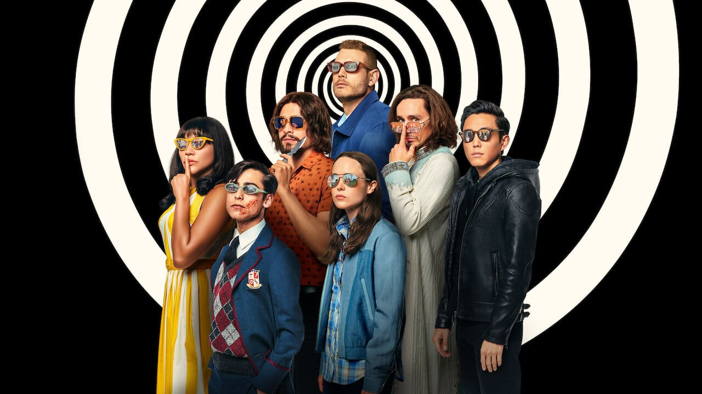

アンブレラアカデミー
2020/08/30
ドラマ

あらすじ
1989年10月、これまで妊娠していなかった43人の女性から突然子供が生まれるという異常事態が発生。その内の7人の子供たちが、大金持ちで天才発明家のハーグリーヴス氏によって引き取られます。ハーグリーヴス氏は引き取った子供達が世界を救うスーパーヒーローになるようアンブレラ・アカデミーを設立しますが、計画は予定通りには進まず次第に家族はバラバラになってしまいます。アンブレラ・アカデミーが解散し、子供達も大人になりそれぞれの生活を持つようになった頃、突如舞い込んだハーグリーヴス氏の訃報。それがきっかけとなり子供達は再び集まることになりますが、父親の死に不可解な点があることに気付きます・・・。父親の死の謎を解き明かすため、そして地球の平和を守るため、アンブレラ・アカデミーが再び立ち上がる！
不思議な7人家族
子どもの頃、突然妊娠をして生まれた超能力者たちの話で、親もバラバラなんですが大金持ちのおじいちゃんに引き取られて世界を救うものとして育てられます。「ゴリラの身体を持つ」、「ナイフ投げの達人」、「言った事が現実化する能力の持ち主」、「死者との交信」、「タイムトラベル」、「腹から触手を出す」、「○○○○○○○」と色々ありますが完全に外れでは・・・みたいな能力があります(最後はネタバレになるので秘密です)
とにかくシーズン2を見てくれ
第一シーズンは割と正直パッとしないです・・・。割と総集編などで見てしまって第二シーズンから見た方がいいとも言われています。とにかく家族の魅力がぶっ飛んでいます。舞台も訳あって現代から1963年にタイムスリップしています。中でも、↑の画像のNo.5がめちゃくちゃ役に立ちます。タイムトラベルということで話の主軸は彼＆瞬間移動の能力も実はあって見応えがかなりあります！！
シーズン3は・・・！？
シーズン2の最後まで見ていた人なら分かると思いますが、絶賛構想中みたいです。さらに監督自身は、「"ファンが望むならば"スピンオフを製作する可能性はある」という発言も！？NetflixオリジナルのSFドラマの目玉に完全になったと言えるアンブレラアカデミー、今後も見逃せません・・・！
全20話(全2シーズン)/総視聴時間 約980分(16.6時間)